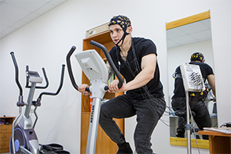
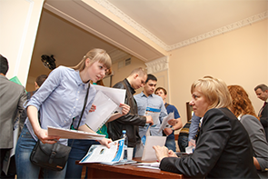

НАУКА
14:27
, сегодня

инновации
17:45
, 2 февраля 2016

общество
14:35
, 3 февраля

образование
18:50
, 5 февраля

НАУКА
11:00
, 7 февраля

в мире
18:50
, 5 февраля


истории и люди
17:45, 2 февраля 2016
Сегодня Томский политех и Дальневосточное отделение РАН подписали договор о сотрудничестве
Подписи под документом поставили ректор ТПУ Пётр Чубик и председатель Дальневосточного отделения Российской академии наук Валентин Сергиенко.